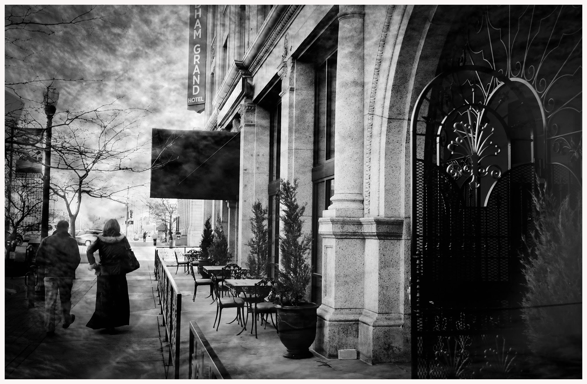
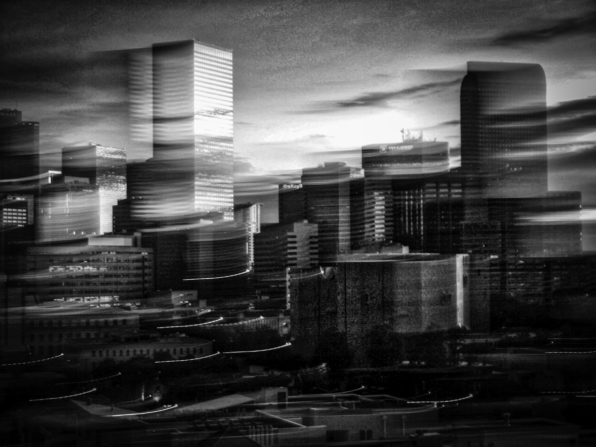

  <script src="https://www.amcharts.com/lib/3/ammap.js"></script>
<script src="https://www.amcharts.com/lib/3/maps/js/worldLow.js"></script>
<script src="https://www.amcharts.com/lib/3/themes/light.js"></script>
<script src="https://www.amcharts.com/lib/3/plugins/export/export.min.js"></script>
<link rel="stylesheet" href="https://www.amcharts.com/lib/3/plugins/export/export.css" type="text/css" media="all" />
<div id="chartdiv"></div>

<script>


/**
 * SVG path for target icon
 */
var targetSVG = "M9.875,0.625C4.697,0.625,0.5,4.822,0.5,10s4.197,9.375,9.375,9.375S19.25,15.178,19.25,10S15.053,0.625,9.875,0.625";

/**
 * SVG path for plane icon
 */
var planeSVG = "m2,106h28l24,30h72l-44,-133h35l80,132h98c21,0 21,34 0,34l-98,0 -80,134h-35l43,-133h-71l-24,30h-28l15,-47";

/**
 * Create the map
 */
var map = AmCharts.makeChart( "chartdiv", {


  "backgroundAlpha": 0,
  "type": "map",
"theme": "light",
"preventDragOut": true,
// "showDescriptionOnHover":true,
"balloon": {
    "textAlign": "left"
},


  "dataProvider": {
    "zoomDuration": 6,
    "map": "worldLow",
    // "zoomLevel": 1,
    "zoomLongitude": 1,
    "zoomLatitude": 42,

    "areas": [{
               id: "US",
              //  customData: "<p><b>The United States of America (USA)</b>, commonly referred to as the United States (U.S.) or America, is a federal republic composed of 50 states, a federal district, five major territories and various possessions.</p>",
              //  description: "<h3 class='location-head'>Seoul</h3><a href='gallery.html'></a>",
           },
           {
              id: "TZ",
              "images": [{
                "svgPath": targetSVG,
                "groupId": "zoomed",
                "title": "Dar es Salaam",
                "latitude": -6.7924,
                "longitude": 39.2083,

                "zoomLevel": 5,
                "description": "<h3 class='location-head'>Dar es Salaam</h3><a href='gallery.html'></a>",
                "descriptionWindowHeight": 600,
                "descriptionWindowWidth": 10000,
              }, {
                "svgPath": targetSVG,
                "groupId": "zoomed",
                "title": "Zanzibar Island",
                "latitude": -6.1357,
                "longitude": 39.3621,
                "zoomLevel": 6,
                "rollOverScale": 3,
                "description": "<h3 class='location-head'>Zanzibar Island</h3><a href='gallery.html'></a>",
                "descriptionWindowHeight": 600,
                "descriptionWindowWidth": 10000
              }]
              // "zoomLevel": 6
              // customData: "<p><b>The United States of America (USA)</b>, commonly referred to as the United States (U.S.) or America, is a federal republic composed of 50 states, a federal district, five major territories and various possessions.</p>",
              // description: "<h3 class='location-head'>Dar Es Salaam</h3><a href='gallery.html'></a>",

          },
          {
              id: "TR",
              // customData: "<p><b>The United States of America (USA)</b>, commonly referred to as the United States (U.S.) or America, is a federal republic composed of 50 states, a federal district, five major territories and various possessions.</p>",
              // description: "<h3 class='location-head'>Seoul</h3><a href='gallery.html'></a>",
          },
          {
              id: "AE",
              // customData: "<p><b>The United States of America (USA)</b>, commonly referred to as the United States (U.S.) or America, is a federal republic composed of 50 states, a federal district, five major territories and various possessions.</p>",
              // description: "<h3 class='location-head'>Seoul</h3><a href='gallery.html'></a>",
          },
          {
              id: "AU",
              // customData: "<p><b>The United States of America (USA)</b>, commonly referred to as the United States (U.S.) or America, is a federal republic composed of 50 states, a federal district, five major territories and various possessions.</p>",
              // description: "<h3 class='location-head'>Seoul</h3><a href='gallery.html'></a>",
        },
          {
              id: "NZ",
              // customData: "<p><b>The United States of America (USA)</b>, commonly referred to as the United States (U.S.) or America, is a federal republic composed of 50 states, a federal district, five major territories and various possessions.</p>",
              // description: "<h3 class='location-head'>Seoul</h3><a href='gallery.html'></a>",
          },
          {
              id: "KR",
              // customData: "<p><b>The United States of America (USA)</b>, commonly referred to as the United States (U.S.) or America, is a federal republic composed of 50 states, a federal district, five major territories and various possessions.</p>",
              // description: "<h3 class='location-head'>Seoul</h3><a href='gallery.html'></a>",
          }
     ],

    "lines": [ {
      "id": "line1",
      "arc": -0.85,
      "alpha": 0.3,
      "latitudes": [ 39.7392, 41.0082, -6.7924, -6.1357, 25.2048, -33.8688, -45.0312, 37.5665  ],
      "longitudes": [ -104.9903, 28.9784, 39.2083, 39.3621, 55.2708, 151.2093, 168.6626, 126.9780 ]
    }, {
      "id": "line2",
      "alpha": 0,
      "color": "#000000",
      "latitudes": [ 39.7392, 41.0082, -6.7924, -6.1357, 25.2048, -33.8688, -45.0312, 37.5665 ],
      "longitudes": [ -104.9903, 28.9784, 39.2083, 39.3621, 55.2708, 151.2093, 168.6626, 126.9780 ]
    } ],


    "images": [ {
      "svgPath": targetSVG,
      "groupId": "zoomed",
      "title": "Denver",
      "label": "Denver",
      "labelFontSize": 12,
      "labelPosition": "bottom",
      "latitude": 39.7392,
      "longitude": -104.9903,
      // "zoomLevel": 5,
      // "rollOverScale": 9,
      "description": "<h3 class='location-head'>Istanbul</h3><a href='gallery.html'></a>",
      "descriptionWindowHeight": 600,
      "descriptionWindowWidth": 10000,
    }, {
      "svgPath": targetSVG,
      "groupId": "zoomed",
      "title": "Istanbul",
      "latitude": 41.0082,
      "longitude": 28.9784,
      // "rollOverScale": 3,
      "description": "<h3 class='location-head'>Istanbul</h3><a href='gallery.html'></a>",
      "descriptionWindowHeight": 600,
      "descriptionWindowWidth": 10000,
    },
    // {
    //   "svgPath": targetSVG,
    //   "groupId": "zoomed",
    //   "title": "Dar es Salaam",
    //   "latitude": -6.7924,
    //   "longitude": 39.2083,
    //   "rollOverScale": 9,
    //   "zoomLevel": 8,
    //   "description": "<h3 class='location-head'>Dar es Salaam</h3><a href='gallery.html'></a>",
    //   "descriptionWindowHeight": 600,
    //   "descriptionWindowWidth": 10000,
    // }, {
    //   "svgPath": targetSVG,
    //   "groupId": "zoomed",
    //   "title": "Zanzibar Island",
    //   "latitude": -6.1357,
    //   "longitude": 39.3621,
    //   "zoomLevel": 8,
    //   "rollOverScale": 9,
    //   "description": "<h3 class='location-head'>Zanzibar Island</h3><a href='gallery.html'></a>",
    //   "descriptionWindowHeight": 600,
    //   "descriptionWindowWidth": 10000
    // },
    {
      "svgPath": targetSVG,
      "groupId": "zoomed",
      "title": "Dubai",
      "latitude": 25.2048,
      "longitude": 55.2708,
      // "rollOverScale": 3,
      "description": "<h3 class='location-head'>Dubai</h3><a href='gallery.html'></a>",
      "descriptionWindowHeight": 600,
      "descriptionWindowWidth": 10000
    },
    {
      "svgPath": targetSVG,
      "groupId": "zoomed",
      "title": "Sydney",
      "latitude": -33.8688,
      "longitude": 151.2093,
      // "rollOverScale": 3,
      "description": "<h3 class='location-head'>Sydney</h3><a href='gallery.html'></a>",
      "descriptionWindowHeight": 600,
      "descriptionWindowWidth": 10000
    },
    {
      "svgPath": targetSVG,
      "groupId": "zoomed",
      "title": "Queenstown",
      "latitude": -45.0312,
      "longitude": 168.6626,
      // "rollOverScale": 3,
      "description": "<h3 class='location-head'>Queenstown</h3><a href='gallery.html'></a>",
      "descriptionWindowHeight": 600,
      "descriptionWindowWidth": 10000
    },
    {
      "svgPath": targetSVG,
      "groupId": "zoomed",
      "title": "Seoul",
      "latitude": 37.5665,
      "longitude": 126.9780,
      // "rollOverScale": 3,
      "description": "<h3 class='location-head'>Seoul</h3><a href='gallery.html'></a>",
      "descriptionWindowHeight": 600,
      "descriptionWindowWidth": 10000
    },
    // {
    //   "svgPath": targetSVG,
    //   "title": "Los Angeles",
    //   "latitude": 34.0522,
    //   "longitude": -118.2437
    // },
    // {
    //   "svgPath": targetSVG,
    //   "title": "Denver",
    //   "latitude": 39.7392,
    //   "longitude": -104.9903
    // },
    {
      "svgPath": planeSVG,
      "positionOnLine": 0,
      "color": "#000000",
      "alpha": 0.1,
      "animateAlongLine": true,
      "lineId": "line2",
      "flipDirection": false,
      "loop": true,
      "scale": 0.03,
      "positionScale": 1.6
    }, {
      "svgPath": planeSVG,
      "positionOnLine": 0,
      "color": "#585869",
      "animateAlongLine": true,
      "lineId": "line1",
      "flipDirection": false,
      "loop": true,
      "scale": 0.03,
      "positionScale": 2.8
    } ],
    "getAreasFromMap": false
  },


"areasSettings": {
    // "autoZoom": true,
    "selectedColor": "#637CE3",
    "selectedOutlineColor": "#CC0000"
},


  "imagesSettings": {
    "color": "#585869",
    "rollOverColor": "#585869",
    "selectedColor": "#585869",
    "pauseDuration": 0.2,
    "animationDuration": 2.5,
    "adjustAnimationSpeed": false,
    "bringForwardOnHover": true,
    "selectable": true
  },

  "linesSettings": {
    "color": "#585869",
    "alpha": 0.4
  },


  // "listeners": [{
  //   "event": "init",
  //   "method": function(e) {
  //
  //     var map = e.chart;
  //
  //     /**
  //      * Log initial zoom settings
  //      */
  //     map.initialZoom = {
  //       "zoomLevel": e.chart.zoomLevel(),
  //       "zoomLongitude": e.chart.zoomLongitude(),
  //       "zoomLatitude": e.chart.zoomLatitude()
  //     };
  //   }
  // }],


  "export": {
    "enabled": true
  }


} );

map.addListener( "rendered", function() {
  revealMapImages();
  map.addListener( "zoomCompleted", revealMapImages );
} );

function revealMapImages( event ) {
  var zoomLevel =map.zoomLevel();
  if ( zoomLevel < 2 ) {
    map.hideGroup( "zoomed" );
  }
  else {
      map.showGroup('zoomed')

      console.log(map.zoomlevel())
  }

}


// map.addListener('rendered', function() {
//   map.zoomToLongLat(3,-104.9903,39.7392)
//     map.addListener('zoomCompleted', function() {
//       map.zoomToLongLat(4,126.9780,37.5665)
//     })
//
//
// });


// var map = AmCharts.makeChart( "chartdiv", {
//
//   "type": "map",
//   "theme": "light",
//   "projection": "miller",
//
//   "dataProvider": {
//     "map": "worldLow",
//     "getAreasFromMap": true
//   },
//   "areasSettings": {
//     "autoZoom": true,
//     "selectedColor": "#CC0000"
//   },
//   "smallMap": {},
//   "listeners": [{
//     "event": "init",
//     "method": function(e) {
//
//       var map = e.chart;
//
//       /**
//        * Log initial zoom settings
//        */
//       map.initialZoom = {
//         "zoomLevel": e.chart.zoomLevel(),
//         "zoomLongitude": e.chart.zoomLongitude(),
//         "zoomLatitude": e.chart.zoomLatitude()
//       };
//     }
//   }],
//   "export": {
//     "enabled": true,
//     "position": "bottom-right",
//     "beforeCapture": function() {
//       var map = this.setup.chart;
//       /**
//        * Log current zoom settings so we can restore after export
//        */
//       map.currentZoom = {
//         "zoomLevel": map.zoomLevel(),
//         "zoomLongitude": map.zoomLongitude(),
//         "zoomLatitude": map.zoomLatitude()
//       };
//
//       /**
//        * Zoom to initial position
//        */
//       map.zoomToLongLat(
//         map.initialZoom.zoomLevel,
//         map.initialZoom.zoomLongitude,
//         map.initialZoom.zoomLatitude,
//         true
//       );
//     },
//     "afterCapture": function() {
//       var map = this.setup.chart;
//       setTimeout(function() {
//         /**
//          * Restore current zoom
//          */
//         map.zoomToLongLat(
//           map.currentZoom.zoomLevel,
//           map.currentZoom.zoomLongitude,
//           map.currentZoom.zoomLatitude,
//           true
//         );
//       }, 10);
//     }
//   }
// } );

</script>
